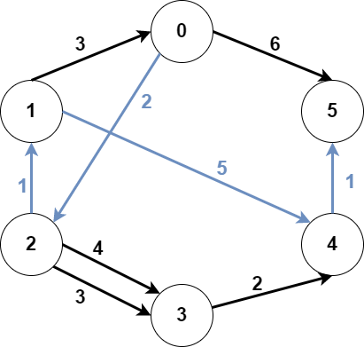
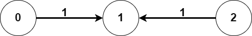

| Category | Difficulty | Likes | Dislikes |
|---|---|---|---|
| Algorithms | Hard | 773 | 23 |
google
You are given an integer n denoting the number of nodes of a weighted directed graph. The nodes are numbered from 0 to n - 1.
You are also given a 2D integer array edges where edges[i] = [fromi, toi, weighti] denotes that there exists a directed edge from fromi to toi with weight weighti.
Lastly, you are given three distinct integers src1, src2, and dest denoting three distinct nodes of the graph.
Return the minimum weight of a subgraph of the graph such that it is possible to reach dest from both src1 and src2 via a set of edges of this subgraph. In case such a subgraph does not exist, return -1.
A subgraph is a graph whose vertices and edges are subsets of the original graph. The weight of a subgraph is the sum of weights of its constituent edges.
Example 1:

Input: n = 6, edges = [[0,2,2],[0,5,6],[1,0,3],[1,4,5],[2,1,1],[2,3,3],[2,3,4],[3,4,2],[4,5,1]], src1 = 0, src2 = 1, dest = 5
Output: 9
Explanation:
The above figure represents the input graph.
The blue edges represent one of the subgraphs that yield the optimal answer.
Note that the subgraph [[1,0,3],[0,5,6]] also yields the optimal answer. It is not possible to get a subgraph with less weight satisfying all the constraints.Example 2:

Input: n = 3, edges = [[0,1,1],[2,1,1]], src1 = 0, src2 = 1, dest = 2
Output: -1
Explanation:
The above figure represents the input graph.
It can be seen that there does not exist any path from node 1 to node 2, hence there are no subgraphs satisfying all the constraints.
Constraints:
3 <= n <= 1050 <= edges.length <= 105edges[i].length == 30 <= fromi, toi, src1, src2, dest <= n - 1fromi != toisrc1, src2, and dest are pairwise distinct.1 <= weight[i] <= 105